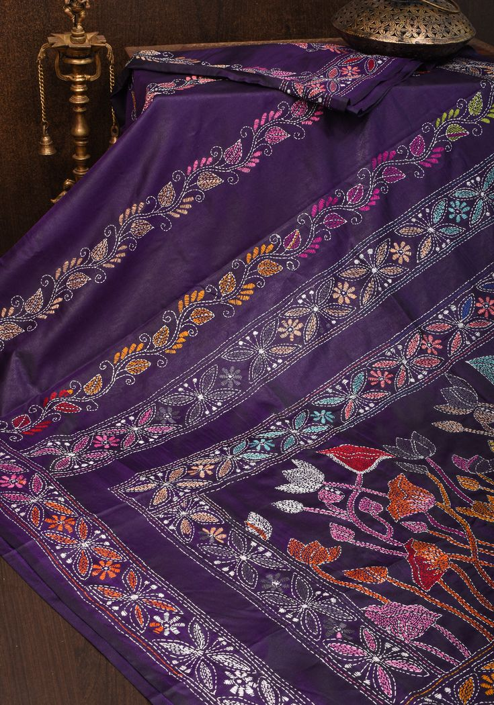
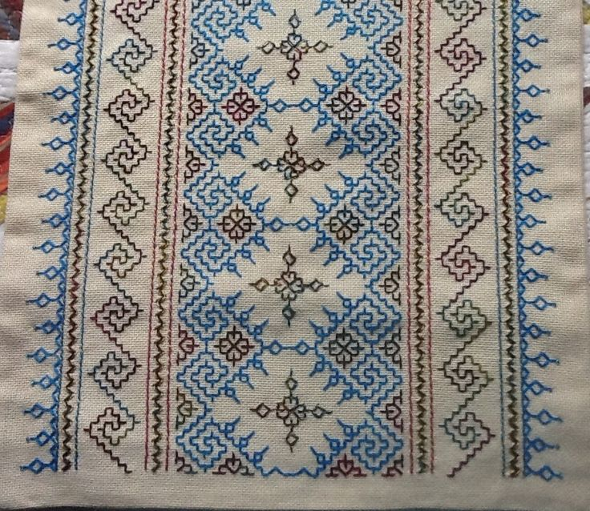
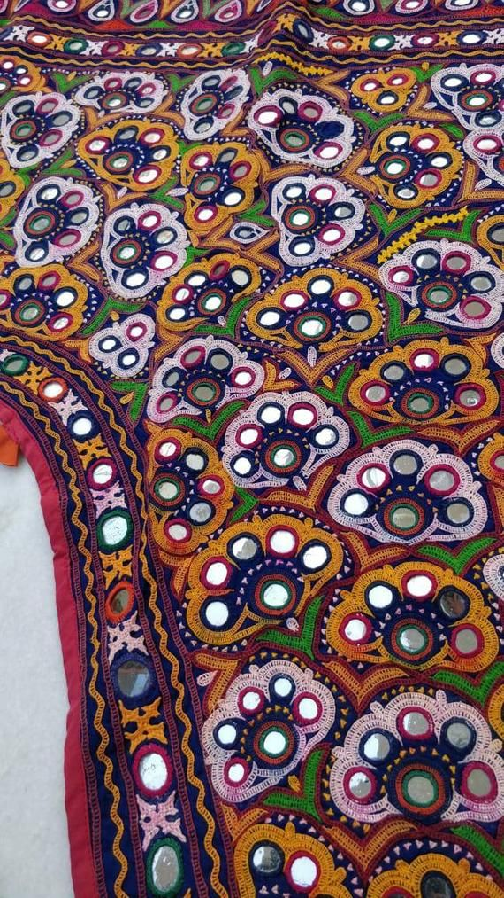
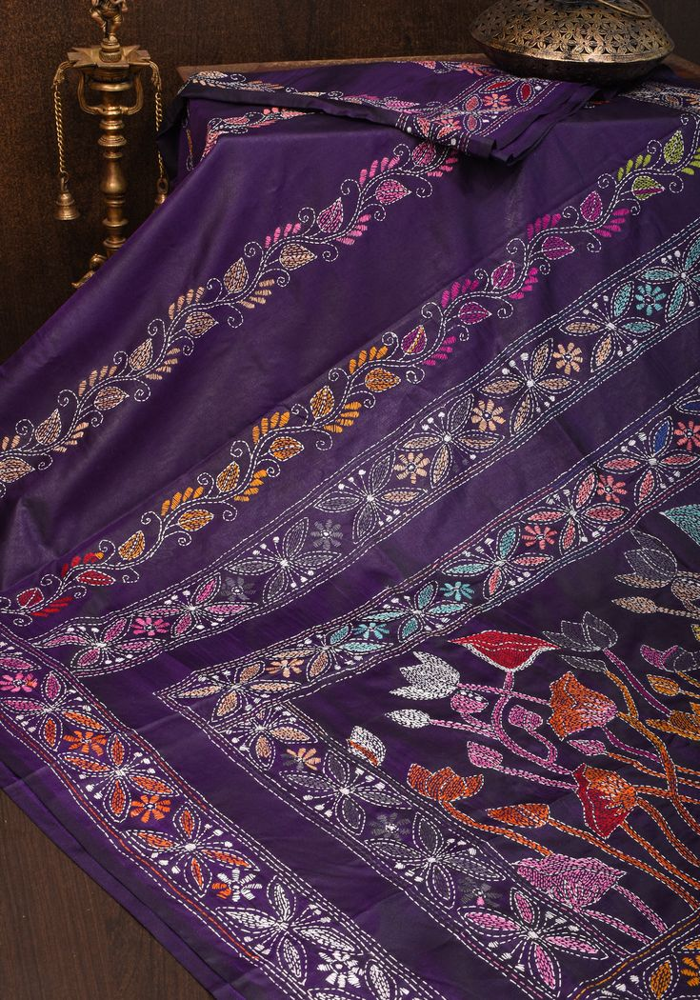
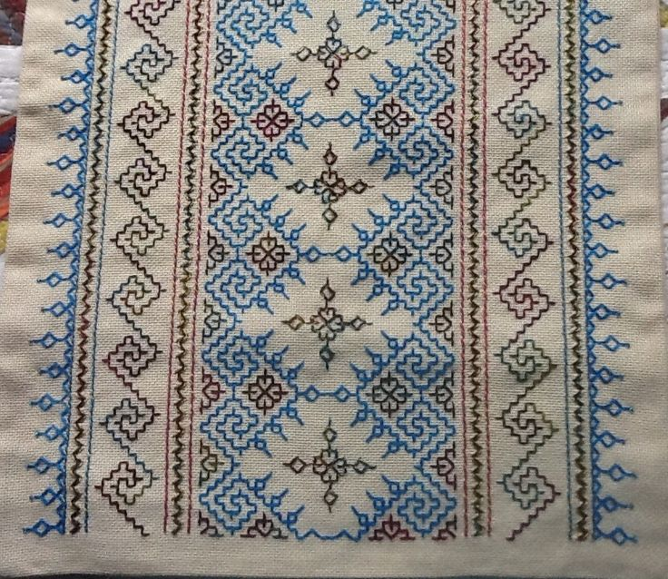
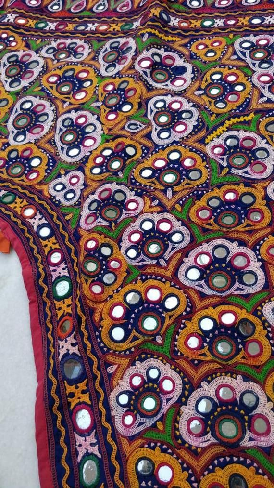

CHIKANKARI
where delicate threads weave stories of timeless elegance.When it is Chikankari, a white kurta has to be obvious. It is rumoured to have been introduced by Jahangir’s wife, Noor Jahan. But little evidence supports this. The birthplace of this amazing art of embroidery is Lucknow in Uttar Pradesh. Chikankari originally began with white thread on white fabric, but guess what? Over time, you can find it in every colour! This revived work is done by the most patient pair of hands and skilled fingers working magic on traced patterns on fabric such as silk, cotton and more. Not to forget, pure cotton is the first choice when we search for a Chikankari Kurta online. This embroidery work can be used for mostly ethnic collections for both men and women.
PHULKARI
vibrant threads of folklore woven into intricate, colorful tapestries.Originating in Punjab, this form of embroidery is as vibrant as the Punjabis themselves! Phulkari uses multi-coloured threads, which make the appearance unignorable. The base of the fabric used for this embroidery usually needs improvement. The stitches are made mostly on the back of the fabric, while the finished design appears on the front without gaps. The community of women usually performs the Phulkari embroidery art. Khaddar is the traditional fabric used for this type of embroidery, but today, it is seen in many types of fabric, including cotton, chiffon, etc.
SHISHA WORK
exquisite, detailed worlds captured in breathtakingly tiny strokOriginally done using mica, mirror work was introduced by Iranian travellers sometime around the 17th century. This form of embroidery is now done using various shapes of small mirrors. These mirrors are placed on the cloth and then fixed using special cross-stitch techniques to keep them firm. Mirror work has several variations due to the fact that it is a celebrated form of embroidery work performed in the states of Gujarat, Rajasthan and Haryana. Moreover, this embroidery work is not limited to clothing; it is also used on various accessories such as bags, earrings, bands, shoes and so on!
AARI WORK
divine narratives brought to life with intricate devotion and vibrant elegance.Aari embroidery gets its name from the special needle it uses for the same aari, meaning it is sharp and hooked! This craft started with the Mughal Empire and became popular in places like Rajasthan, Lucknow and Kashmir. What's really cool about Aari is how it is done: artisans use this hooked needle to make loops of chain stitches. Sometimes, they even add extra sparkle with beads and sequins to create an astounding piece of attire. This form of embroidery is widely used in the fashion industry, especially for the creation of bridal gowns and lehengas. The details of this embroidery form are its true essence, while the blend of moti, beads, kundans and seeps add another layer of beauty to the finished garments.
ZARDOSHI
vibrant, expressive depictions of folklore and nature captured in bold, lively patterns.Zardosi work is among the category of royal or most luxurious embroidery forms that started a long time ago with the Mughal kings in the 16th century. The name comes from combining Persian words - 'zari' meaning gold, and 'dosi' meaning embroidery. So, you can guess that it's all about using shiny golden and silvery threads to make things look really fancy! But that’s not all! This embroidery was mostly done on the richest fabric types, including pure velvet and silk, to make it a perfect fit for the royals of that time. Sometimes, they even add real precious stones and pearls to make it even more beautiful and luxurious. So, when you see Zardosi, you are looking at a piece of art that is fit for a king or the queen of mahal!.
KASHIDA
simple, rhythmic patterns that capture the essence of rural life with striking simplicity.As beautiful as Kashmir itself, Kashida is a traditional work of the artisans in the place that gained huge popularity all over India. It uses beautiful thread colours, mostly bright and lively, to create a perfect piece of cloth that can complement your entire look. This type of embroidery work is mostly done on shawls, bedsheets, odhani, saree pallu, borders, scarves, and even home furnishing items. They choose floral motifs to create patterns and are definitely used for women's wear, especially during winter.
GOTA WORK
dynamic, folk art that blends vibrant color with expressive, rhythmic storytelling.Gota embroidery comes from Rajasthan and uses special threads from Lucknow to make beautiful patterns on fabric. For this embroidery, they first used gold and silver wires of different lengths, which are specially woven into the fabric. Georgette or bandhani is the most common fabric used for this. The ready gota is added to the cloth by sewing it on. Even though they look fancy, they are actually quite light. Brides love them because they are special and light and come in lots of colours and fabrics. You can find Gota embroidery on outfits like suits, sarees, blouses and lehengas.
KANTHA
dynamic, folk art that blends vibrant color with expressive, rhythmic storytelling.The simplicity is the main characteristic of Kantha stitch, which hails from West Bengal, extends in the state of Odisha Tripura and crosses the border with Bangladesh. The traditional women of these regions mostly do this embroidery. They are also known as dorukha since the design looks the same from both front and back. The neatness of this embroidery is another feature to love. Not to mention, it is one of the lightest forms of embroidery, which almost feels like nothing since it adds no weight to the garment. Kantha stitches are done on sarees, blankets, bedsheets, pillow covers, dupattas, shirts and a variety of garments and home accessories
KASUTI
enchanting, dot-rich landscapes that vividly bring folklore and nature to life.If there is anything in embroidery work that feels unrealistic, it has to be Kasuti of Karnataka. Truly inspired by the geometric pattern, this form of embroidery seems both dramatic and interesting at the same time. There is no certain pattern you can use to do this stitch work. However, it is mostly inspired by fauna motifs. The stitching is done by counting each thread, which is, at times, extremely tedious work. Also, these embroideries are done without knots, making them extremely difficult to perform. But despite all the drawbacks, these embroidery works can create extremely beautiful pieces of attire such as kurtas, dupatta borders, jackets, and so on!
BANJAARA
ancient, mesmerizing art that transforms mythic stories into vibrant, detailed wall masterpieces.The Banjara nomadic tribes, known for their versatile travels, spread this embroidery style across different places. This led to different regions developing their unique techniques and designs. This embroidery starts with a coloured fabric. They make patterns using cross-stitches in shapes like squares and triangles. They also use chain stitches and a special quilting stitch to make special designs. Sometimes, they add mirrors and beads to make it even more special.